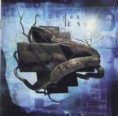

| Artist: | Under The Sun |
| Title: | Under The Sun |
| Label: | Magna Carta MAX-9041-2 |
| Length(s): | 67 minutes |
| Year(s) of release: | 2000 |
| Month of review: | 04/2000 |
| 1) | This Golden Voyage | 7.13 |
| 2) | Tracer | 5.41 |
| 3) | Seeing Eye God | 3.37 |
| 4) | Gardens Of Autumn | 5.02 |
| 5) | Perfect World | 5.21 |
| 6) | Reflections | 5.45 |
| 7) | Breakwater | 7.34 |
| 8) | The Time Being | 10.01 |
| 9) | Dream Catcher | 7.56 |
| 10) | From Henceforth Now And Forever (ps 124) | 9.16 |